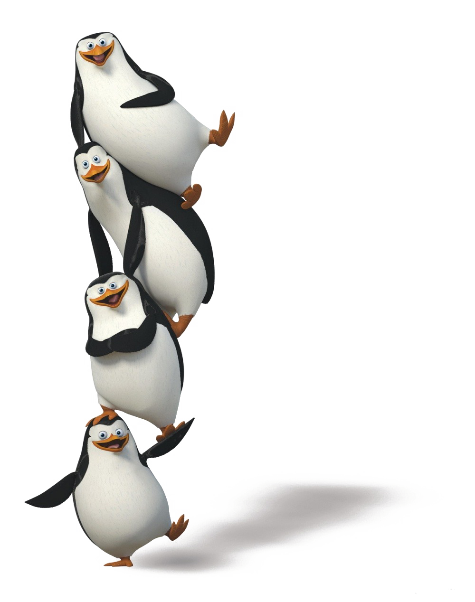

Men pingvinlarni yaxshi ko'raman
- Pingvinlar (Sphenisciformes) -qushlarning bir turkumi.
- Suzuvchi, shoʻngʻuvchi, lekin ucha olmaydi.
- 16 turni birlashtiruvchi 6 urugʻi mavjud.
-
Gavdasining uzunligi 30—120 sm, vazni 1–40 kg .
-
Qorni va koʻkragi oq, orqasi toʻq koʻk yoki qora.
-
Teri ostidagi qalin yogʻ qavati Pingvinnini sovuqsan saklaydi.
- Koʻkrak muskullari yaxshi rivojlangan.
-
Qanotlari tangachasimon patlar bilan qoplangan kurakoyoqqa aylangan.
-
Suzganda va shoʻngʻiganda ulardan eshkak sifatida foydalanadi.
- Muz va qor ustida sekin qadamlab yuradi.
- Pati mayin.
-
Antarktida va Janubiy yarim sharning oʻrta min-taqalarida Tapkalgan.
-
Baliq, boshoyokli mol-lyuskalar, qis-qichbaqasimonlar bilan oziqla-nadi.
- Koloniya boʻlib uya kuradi.
-
1 — 2 ta tuxum qoʻyib, nari va modasi navbatlashib bosadi (adeli turi 35
kun), kirol Pingvinlari nari tuxumini (bitta) panjasida ushlab,
qornidagi teri burma bilan oʻrab, isitadi (65 kun davomida).
- Goʻshti qat-tiq, mazasiz.
- Terisi ishlatiladi.
-
Xalq-aro tabiatni muhofaza qilish ittifo-qining Qizil kitobiga 3 turi
kiritilgan.[1]
